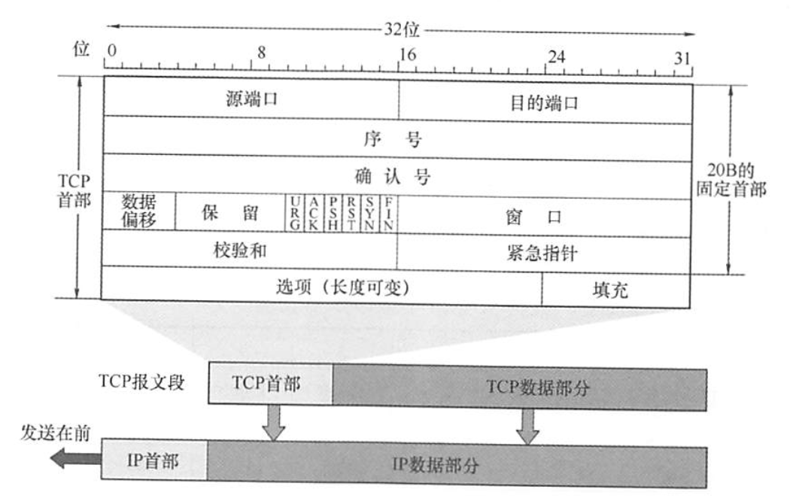

2022.03.13
TCP 是在不可靠的 IP 层之上实现的可靠的数据传输协议，它主要解决传输的可靠、有序、无丢失和不重复问题。TCP 是TCP/IP体系中非常复杂的一个协议，主要特点如下：
面向连接：TCP 是面向连接的传输层协议，TCP 连接是一条逻辑连接。
端到端，不支持组播：每条TCP 连接只能有两个端点，每条TCP 连接只能是端到端的（进程对进程）。
可靠有序、不丢不重：TCP 提供可靠交付的服务，保证传送的数据无差错、不丢失、不重复且有序。
全双工
发送缓存用来暂时存放以下数据：①【准备发的】发送应用程序传送给发送方TCP准备发送的数据；②【发了没确认的】TCP 已发送但尚未收到确认的数据。
接收缓存用来暂时存放以下数据：①【收了没接受的】按序到达但尚未被接收应用程序读取的数据：②【收了没按序的】不按序到达的数据。
TCP 和 UDP在发送报文时所采用的方式完全不同。UDP报文的长度由发送应用进程决定而TCP报文的长度则根据接收方给出的窗口值和当前网络拥塞程度来决定。如果应用进程传送到TCP 缓存的数据块太长，TCP 就把它划分得短一些再传送：如果太短，TCP 也可以等到积累足够多的字节后再构成报文段发送出去。关于TCP 报文的长度问题，后面会详细讨论。
TCP传送的数据单元称为报文段。TCP报文段既可以用来运载数据，又可以用来建立连接、释放连接和应答。一个TCP报文段分为首部和数据两部分，整个TCP报文段作为P数据报的数据部分封装在IP数据报中，如图5.6所示。其首部的前20B是固定的。TCP首部最短为20B,后面有4N字节是根据需要而增加的选项，长度为4B的整数倍。

序号。占4B,范围为0~
例如，一报文段的序号字段值是301，而携带的数据共有100B,表明本报文段的数据的最后一个字节的序号是400，因此下一个报文段的数据序号应从401开始。
确认号。占4B,是期望收到对方下一个报文段的第一个数据字节的序号。若确认号为N,则表明到序号N-1为止的所有数据都已正确收到。
例如，B正确收到了A发送过来的一个报文段，其序号字段是501，而数据长度是200B(序号501~700)，这表明B正确收到了A发送的到序号700为止的数据。因此B期望收到A的下一个数据序号是701，于是B在发送给A的确认报文段中把确认号置为701。
数据偏移(即首部长度)。占4位，这里不是IP数据报分片的那个数据偏移，而是表示首部长度（首部中还有长度不确定的选项字段），它指出TCP报文段的数据起始处距离TCP报文段的起始处有多远。“数据偏移”的单位是32位（以4B为计算单位)。由于4位二进制数能表示的最大值为15，因此TCP首部的最大长度为60B。
保留。占6位，保留为今后使用，但目前应置为0。
紧急位URG。当URG=1时，表明紧急指针字段有效。它告诉系统此报文段中有紧急数据，应尽快传送（相当于高优先级的数据）。但URG需要和首部中紧急指针字段配合使用，即数据从第一个字节到紧急指针所指字节就是紧急数据。
紧急指针。占2B。紧急指针仅在URG=1时才有意义，它指出在本报文段中紧急数据共有多少字节（紧急数据在报文段数据的最前面）。
确认位ACK。仅当ACK=1时确认号字段才有效。当ACK=0时，确认号无效。TCP规定，在连接建立后所有传送的报文段都必须把ACK置1。
推送位PSH(Push)。接收方TCP收到PSH=1的报文段，就尽快地交付给接收应用进程，而不再等到整个缓存都填满了后再向上交付。
复位位RST(Rest)。当RST=1时，表明TCP连接中出现严重差错（如主机崩溃或其他原因)，必须释放连接，然后再重新建立运输连接。
同步位SYN。当SYN=1时表示这是一个连接请求或连接接受报文。
当SYN=1,ACK=0时，表明这是一个连接请求报文，对方若同意建立连接，则应在响应报文中使用SYN=1,ACK=1。
终止位FIN(Finish)。用来释放一个连接。当FIN=1时，表明此报文段的发送方的数据已发送完毕，并要求释放运输连接。
窗口。占2B,范围为0~
例如，设确认号是701，窗口字段是1000。这表明，从701号算起，发送此报文段的一方还有接收1000字节数据（字节序号为701~1700）的接收缓存空间。
TCP 是面向连接的协议，因此每个TCP 连接都有三个阶段：连接建立、数据传送和连接释放。TCP 连接的管理就是使运输连接的建立和释放都能正常进行。在TCP 连接建立的过程中，要解决以下三个问题： 1）要使每一方能够确知对方的存在 2）要允许双方协商一些参数（如最大窗口值、是否使用窗口扩大选项、时间戳选项及服务质量等）。 3）能够对运输实体资源（如缓存大小、连接表中的项目等）进行分配。 TCP 把连接作为最基本的抽象，每条TCP 连接有两个端点，TCP 连接的端点不是主机，不是主机的 IP 地址，不是应用进程，也不是传输层的协议端口。TCP 连接的端口即为套接宇(Socket)或插口，每条 TCP 连接唯一地被通信的两个端点（即两个套接字）确定TCP 连接的建立采用客户/服务器模式。主动发起连接建立的应用进程称为客户 (Client)，而被动等待连接建立的应用进程称为服务器(Server)。